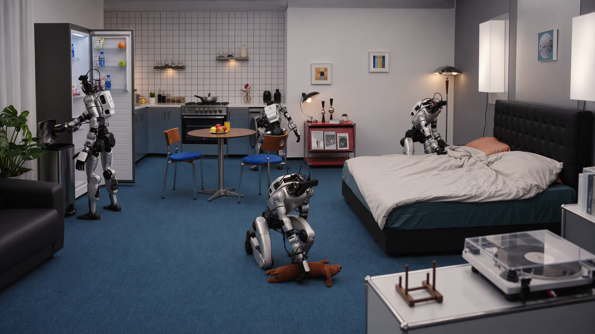

Delta-0 (Δ0): A New Chapter in Humanoid Intelligence
We introduce Δ0, a scalable humanoid foundation model (HFM) for whole-body loco-manipulation. By co-designing a latent world-action brain with a 69-DoF whole-body controller, Δ0 unifies large-scale human data pre-training, real-to-sim-to-real evaluation, and delta-action real-world RL to coordinate perception, locomotion, and dexterous manipulation.